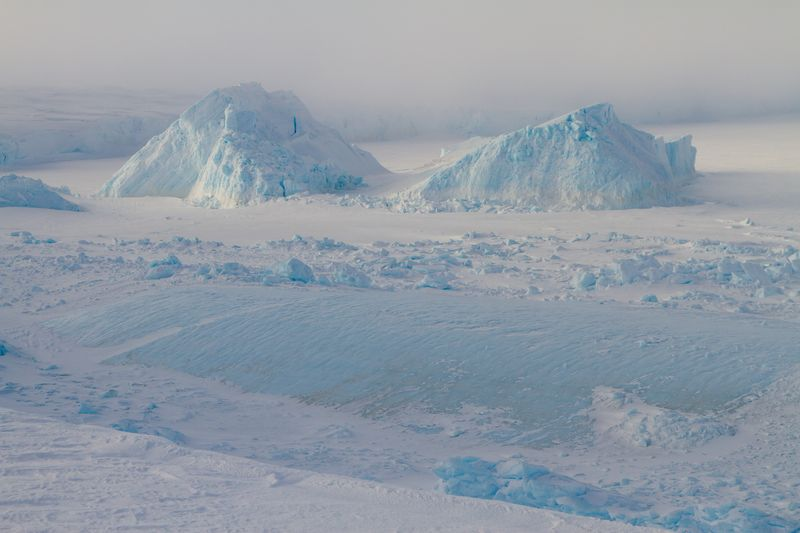
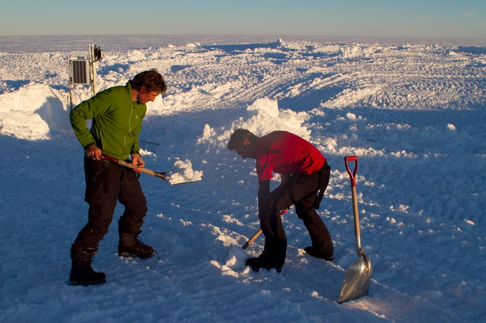
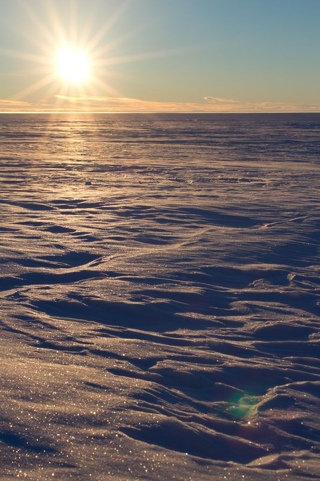
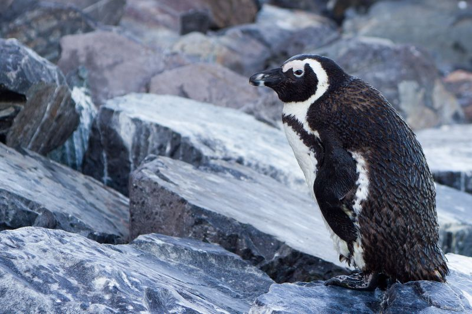

lionel favier @ Glaciologie - ULB
end 2013 - between princess elisabeth station and the roi baudouin ice shelf

Icebergs stuck in the sea ice

Hard workers shovelling huge amount of pure ice

about one o'clock

An african penguin